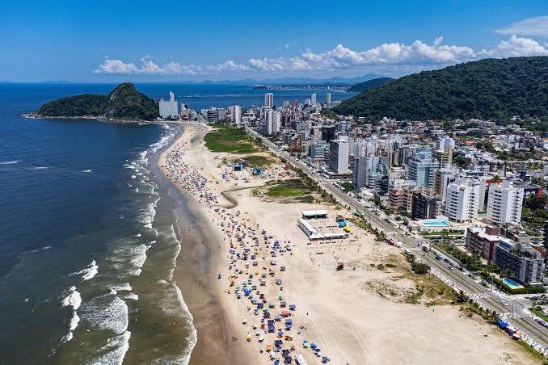
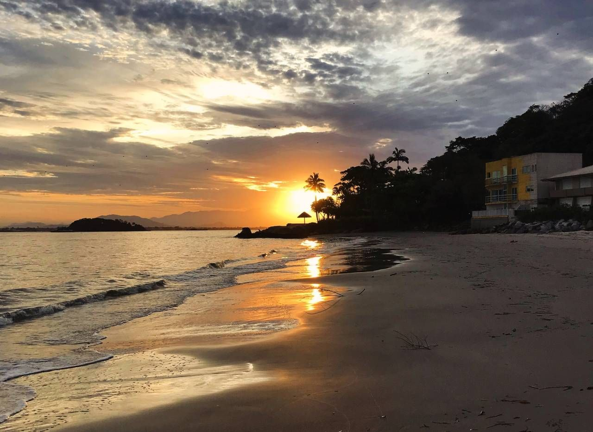
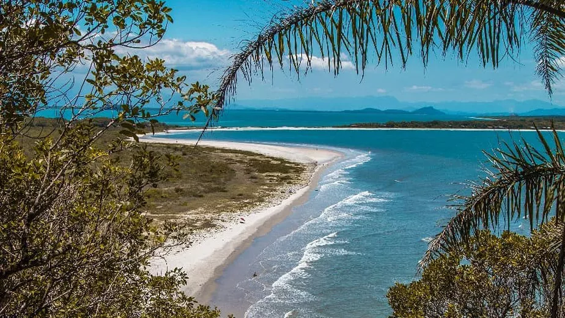
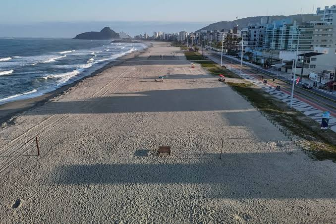
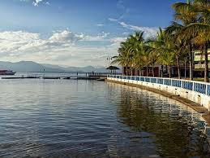

Muito além das praias, o litoral do Paraná esconde mistérios coloniais, lendas piratas e uma das áreas de Mata Atlântica mais preservadas do Brasil.
Com pouco menos de cem quilômetros de extensão costeira, o litoral do Paraná surpreende quem espera encontrar apenas grandes faixas de areia e mar aberto. Essa estreita faixa de terra, espremida entre as imponentes montanhas da Serra do Mar e as águas do Oceano Atlântico, abriga uma das maiores e mais preservadas porções contínuas de Mata Atlântica do planeta, um ecossistema pulsante que dita o ritmo da vida local. A jornada de quem visita a região começa muito antes de se pisar na areia. Descer a histórica Estrada da Graciosa ou cruzar os trilhos da secular linha férrea rumo a Morretes e Antonina é fazer uma viagem no tempo. Nessas cidades coloniais, o aroma do barreado — prato típico cozido por horas em panelas de barro mistura-se com a brisa úmida da serra. Casarões antigos e ruas de paralelepípedo guardam o passado de um Paraná que cresceu a partir dos seus rios e portos. Abaixo da serra, o cenário se abre em um complexo estuarino monumental. A Baía de Paranaguá, uma das maiores do Brasil, é o coração econômico e ecológico da costa. De um lado, pulsa o Porto de Paranaguá, um gigante da logística sul-americana por onde passam riquezas do agronegócio e da indústria. Do outro, estendem-se manguezais intocados e ilhas que parecem ter parado no tempo, como o Parque Nacional de Superagui, lar do raro mico-leão-da-cara-preta e refúgio de botos-cinzas. Para quem busca o descanso à beira-mar, a costa paranaense se divide em diferentes personalidades. A Ilha do Mel destaca-se como um santuário ecológico sem carros, onde trilhas de areia levam a praias paradisíacas, ao Farol das Conchas e às lendas da Gruta das Encantadas. Já no continente, cidades como Matinhos e Guaratuba equilibram a vida urbana e o turismo de veraneio. Intervenções recentes, como a engorda da faixa de areia em Matinhos e investimentos na orla, transformaram a infraestrutura local, preparando a região para o futuro sem perder a essência. O litoral do Paraná é, acima de tudo, um território de contrastes harmoniosos. É o encontro do pescador artesanal que preserva a cultura do fandango caiçara com os navios de grande porte que cruzam o oceano. É a união de praias agitadas pela temporada de verão e refúgios de silêncio absoluto na floresta. Pequeno em extensão, mas gigante em biodiversidade e cultura, a costa paranaense é um tesouro discretamente guardado no sul do Brasil.

Litoral Paranaense: Quatro Séculos de História e Colonização
O litoral do Paraná nasceu em 1640 na Ilha da Cotinga e consolidou-se em Paranaguá (1648) com Gabriel de Lara na busca pelo ouro. Isolada pela Serra do Mar, a região misturou heranças indígenas, portuguesas e africanas, originando a cultura caiçara e o tradicional Fandango Caiçara. Nos séculos XVIII e XIX, o comércio da erva-mate impulsionou cidades como Morretes e Antonina, culminando na inauguração da Estrada de Ferro em 1885, obra-prima dos engenheiros negros Antônio e André Rebouças. Essa riqueza histórica, portuária e da Mata Atlântica inspirou artistas como Alfredo Andersen e Íria Correia, que imortalizaram a identidade paranaense em suas telas.

O Coração Cultural do Paraná: Onde a Arte e a Tradição se Encontram
O litoral do Paraná é o pilar fundamental da cultura do estado. O antigo isolamento pela Serra do Mar preservou a identidade caiçara e o Fandango Caiçara, ritmo tradicional batido com tamancos de madeira e reconhecido pelo IPHAN como Patrimônio Cultural Imaterial do Brasil. A região também gerou o prato típico Barreado e inspirou os pioneiros das artes visuais do estado, como Íria Correia e o mestre norueguês Alfredo Andersen, considerado o pai da pintura paranaense.

Memória e patrimônio
Imagens em Memória do litoral Paranaense.


Curiosidades
Curiosidade 1
O litoral do Paraná possui uma das menores extensões litorâneas do Brasil, com apenas cerca de 100 km de costa oceânica. Apesar de pequeno em tamanho, o território abriga uma biodiversidade e riqueza cultural impressionantes.
Curiosidade 2
O litoral do Paraná guarda o segredo da primeira comunidade de surf do Brasil a se organizar fora do eixo Rio-São Paulo, impulsionada pelas famosas ondas da Praia de Gaivotas e de Matinhos.